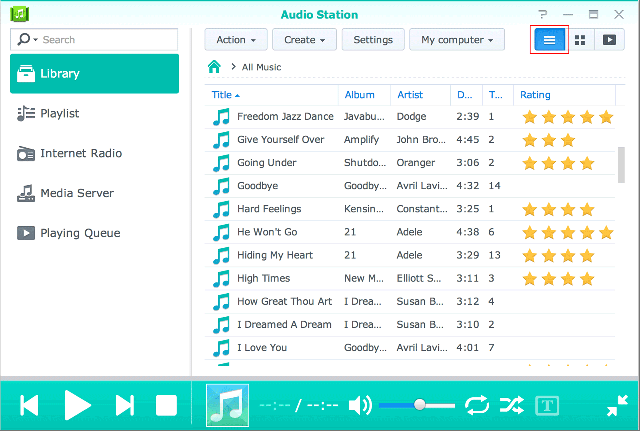

Áttekintés
Az Audio Station segítségével az interneten keresztül rendszerezheti, böngészheti és játszhatja le a Synology NAS eszközén tárolt zenéket. Az Audio Station fájltípusok széles választékát támogatja, így zenéit garantáltan lejátszhatja, függetlenül attól, hogy azok milyen formátumban kerültek mentésre. Ezenfelül a DS Audio alkalmazást, az Audio Station programot kiegészítő mobilalkalmazást is letöltheti, melynek segítségével bárhol, bármikor hozzáférhet a Synology NAS eszközön tárolt zenéihez.
1. Az Audio Station telepítése
- Lépjen a Csomagkezelési központ oldalra, majd keresse meg az Audio Station csomagot. Kattintson a Telepítés lehetőségre.

2. Mentse el a zenefájlokat a music mappába
- Lépjen a File Station > music menüpontra, majd kattintson a Feltöltés elemre.
- Válassza ki a számítógépén tárolt, a music mappába menteni kívánt fájlokat.

3. Zene böngészése
A zenék feltöltését követően a zenéket bármikor lejátszhatja, illetve böngészheti az Audio Station segítségével. Amennyiben akkor is el szeretné érni a zenéit, amikor nem a helyi hálózaton tartózkodik, azt javasoljuk, hogy engedélyezze a QuickConnect funkciót a Vezérlőpult > QuickConnect menüpontban. Amennyiben nem rendelkezik Synology fiókkal, percek alatt létrehozhat egyet, majd QuickConnect ID azonosítót rendelhet DiskStation eszközéhez. Amikor az opció engedélyezve van, bárhonnan bejelentkezhet a DSM rendszerbe, így bármikor elérheti zenéit. A QuickConnect ID azonosítót használva pedig a DS Audio alkalmazásba is beléphet, így nem kell megjegyeznie az IP-címét.
3.1 Könyvtár
A könyvtár a music megosztott mappában vagy a Synology NAS eszköz egyéb indexelt mappáiban tárolt zenéket tartalmazza. A Könyvtár lapon a zenéi kategóriákba rendezve jelennek meg, így a számos lehetőség segítségével könnyebben böngészhet a zenéi között igényei és preferenciái alapján. Ezenfelül könnyebben találhatja meg a keresett dalokat. Az adott kategóriában történő kereséshez kattintson az egyes kategóriákra, vagy válassza ki a kategóriát a keresősáv legördülő menüjéből.

3.2. Megjelenítési módok
Az Audio Station jobb felső sarkában található ikonok segítségével a zenekönyvtár böngészésére használatos, különféle megjelenítési módok között váltogathat.
- A Lista nézet segítségével listaként tekintheti meg zenéit, melyen a dal nevét, az előadót, az albumot, a dal hosszát, a zene számát és értékelését tekintheti meg. 
- A Grafika a dal nevét, az album nevét és az album borítóját jeleníti meg.
- A Lejátszási sor segítségével teljes képernyőn tekintheti meg a lejátszási listát az album borítójával, a dalok címével vagy dalszövegével együtt.


4. Nyilvános megosztás
Az Audio Station nyilvános megosztás funkciója, valamint az alkalmazás által generált hivatkozás segítségével zeneszámokat oszthat meg nyilvánosan másokkal. Ezeknek a személyeknek nem kell a hálózatán tartózkodniuk, illetve még Synology NAS eszközzel sem kell rendelkezniük. A hivatkozás kézhezvételét követően bármikor meghallgathatják a dalokat.
4.1. Dalok nyilvános megosztása
- Jobb egérgombbal kattintson a megosztani kívánt dal(ok)ra, majd válassza a Nyilvános megosztás lehetőséget.
- A dalok nyilvános megosztása esetén két lehetőség közül választhat:
- Amennyiben csak egyetlen dalt szeretne megosztani a megjelenő párbeszédablakban, a hivatkozás megosztásának engedélyezéséhez jelölje be a Nyilvános megosztás jelölőnégyzetet.
- Amennyiben több dalt választ ki megosztáshoz, a rendszer egy lejátszási listát generál. Lehetősége van beállítani a lejátszási lista nevét, valamint az Érvényesség időtartamának testreszabása jelölőnégyzetre, majd az OK gombra kattintva érvényességi időtartamot is beállíthat a hivatkozáshoz.


- Juttassa el a hivatkozást azon személynek, akikkel meg kívánja osztani a lejátszási listát, vagy a hivatkozás közvetlen megnyitásához kattintson az Ugrás a hivatkozásra lehetőségre.

5. Zenék rendezése és lejátszása mobileszközökön
A DS audio iPad/iPhone/iPod touch, Android és Windows Phones eszközökön működik. Az alkalmazás ingyenesen elérhető az Apple App Store, a Google Play és a Windows Phone Store áruházakban. Az azonnali letöltéshez a lenti QR-kódot is beolvashatja.